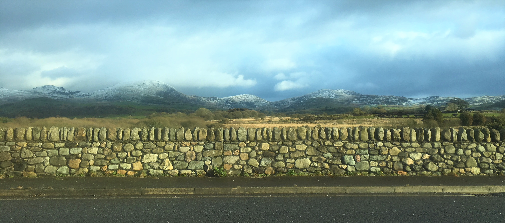

Wales
Snowdonia, Wales - January 5, 2018
The last stop on my family's winter holiday vacation was Wales. Wales, specifically Snowdonia, reminded me of the Scottish highlands. Large hills, winding roads, and small towns were the main features of Snowdonia. It was impressive to see people walking around the town with full-on hiking gear, and then me in my jeggings and wellies (which allowed me to keep my pink sneakers that died on the Isle of Skye trip in tip-top shape while out in the Welsh wilderness). Let's just say I am not a hardcore hiker...
We stayed in an old hunting manor that was converted into multiple apartments for families visiting Wales. Our first day, Friday, December 29th, we attempted to visit Zip World, however it was closed because it had snowed literally like an inch in Snowdonia overnight but apparently it rarely snows in Wales so the people working at Zip World weren't able to deal with the snow. After that failure, we drove about an hour to the coast to see Caernarfon Castle.
Caernarfon Castle is a medieval fortress that King Edward I of England built in 1283. The castle acted as the administrative center of north Wales and was based off Roman architecture. Edward I and Eleanor of Castille (married when Edward was 14 and Eleanor was 12) had the first Welsh-English prince in the castle, aptly named Edward II. The castle wasn't part of many wars or a large focus in English history, but it has folklore around why Edward I chose to build it in the first place. The Roman emperor Magnus Maximus (known in Wales as Macsen Wledig) had a dream about a fair maiden in a castle in a magical land, so he went in search of the castle and found it in Wales. The fair maiden, Elen Luyddawc (anglicized to Helen), was the daughter of a Caernarfon-based chieftain. They married and Macsen became king of Britain. Supposedly, Edward I designed Caernarfon Castle after the dream of Macsen Wledig.
On our way back to Snowdonia, we stopped off at the town with the longest name in the world:
Llanfairpwllgwyngyllgogerychwyrndrobwllllantysiliogogogoch. The name means "St Mary's church in the hollow of the white hazel near to the fierce whirlpool of St Tysilio of the red cave" in Welsh. The Welsh liked to name places using a description, so many locations had long, strange names that were meant to guide people who didn't have a map. We briefly stopped in the town to take photos at the train station and browse the gift shop.
Speaking of Welsh words, I learned 3 words while in Wales: Allan, Cwrw (pronounced Coo-roo), and Araf. Allan means 'Exit', Cwrw means 'Beer' (it was a frequent phrase on Welsh souvenirs...), and Araf means 'Slow' (literally was printing everywhere on the roads and road signs - driving in Wales is dangerous). I feel like I definitely learned my fair share of Welsh, however it would be tough to play scrabble in Welsh because they don't use vowels. Instead, w and y are much more common in Welsh as a substitute for normal vowels.
Saturday we had a slow morning but enjoyed a delicious lunch at a cute cafe in an old manor being renovated on a hill before going back to Zip world. Zip world was super fun, albeit absolutely terrifying at times. We spent about 3 hours in the Llechwedd Slate caverns, exploring the underground zip lines. We had to go through an hour of training, learning how to properly clip into the safely lines and how to properly slide down the zip lines before being allowed into the main caverns. The zip lines were actually quite tame and enjoyable, the hard parts of the course were trying to climb around a wall using the tiniest footholds possible (at one point, there was literally just a metal chain between me and a 200 foot drop into a pile of slate). The climbing parts were stressful but I enjoyed the various bridges and zip lines that let me see the caverns from a safe spot, not clinging on to the side of a wet cavern wall. 10/10 would recommend visiting Zip World if visiting northern Wales.
My time abroad and traveling with my family really made my 2017. I'll miss the UK and being able to hop on to a plane to visit another part of Europe for the weekend but I'm know I'll come back some day soon.
Cheers!
- Caileigh Marshall